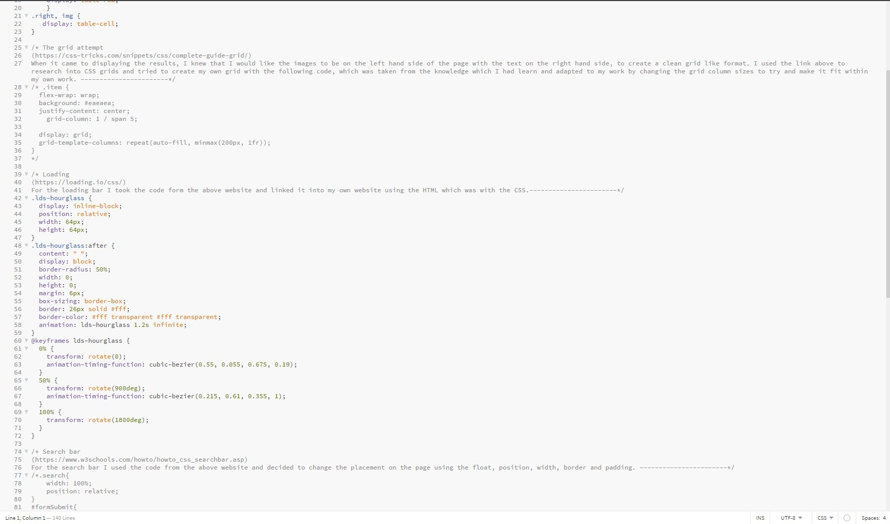
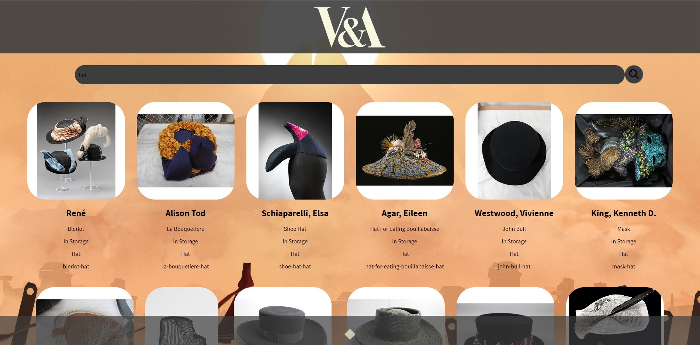

Through the second year of my University of Brighton course within Digital Media, one of the assignments tasked in the first semester was to develop a rest API for a client. It was asked that the rest API would be fully responsive, standards compliant and a single page application which uses vanilla HTML, CSS and JavaScript and DOM manipulation techniques to dynamically display search results to query the V&A API through HTTP requests. To begin with this assignment was very challenging as I had never worked on anything like this before, but it provided an opportunity to test my skills and progress my knowledge within this subject.
To begin this assignment a range of different tutorials were used to progress my skills within JavaScript and using HTTP requests to receive data from an API. These tutorials were found on YouTube, along with tasks which were given within lectures to test my knowledge and skill. Working on the different tasks allowed for external research into the different opportunities when using JavaScript, including the use of conversions between different monies and temperatures.
When the assignment begun the first pages to be developed were a simple HTML page and the background JavaScript to ensure the functionality before the site was decorated. The simple HTML page consisted of a form, a background image and a back to top button. JavaScript was then used to add functionality to the page and to connect to the V&A’s API. Firstly the JavaScript was connected to the form within the HTML using event listeners, with the function ‘getVA’ underneath which retrieves the data from the API and returns it to the page. When the user searches the API the JavaScript builds the URL to see the documentation, then empty’s the previous results, parses the JSON string, loops over the data to retrieve the specified data in the search bar, collects the specified elements (including the image, artist name, artwork title, ect…) and returns this. Although an else statement has also been added to provide feedback to the user if the data could not be collected, and finally at the end sends the outcome of everything which has been retrieved to the HTML page.
After working on the background functions of the website, the CSS when then developed to improve how the outputted information would look to the user. The overall style of the page was changed by adding a translucent header and footer with a customised back to top button. The search bar was fixed to the top of the page even when scrolling and was edited to be responsive and have the search icon separate to the search bar. The result images were also styled to come out in a responsive grid format, helping the design to be more attractive to the audience.
Overall this assignment allowed for the progression in a wide range of different skills which can be applied to many future projects. Although this assignment was difficult I am proud of what I have learnt from it and look to develop more websites like this in the future to improve my skills further.